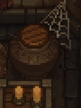
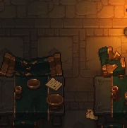
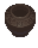
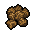
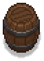
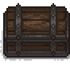

Dungeon
| Dungeon | |
|---|---|
 | |
Location information
| |
Buildable
|
False |
Exits
|
Alchemy lab |
Npcs
| |
| Snake | |

The dungeon is made up of a series of floors that the player progresses through downward. Each floor has a staircase to the next floor down, which can be traversed once all enemies on that floor are defeated. As the player goes deeper, the dungeon gets progressively more difficult.
Accessing
The Dungeon sits behind a gate in the tunnels beneath your house and the church.
The first time the player enters the Storeroom they will get a cut scene plays showing the Cultist, Snake, attempting to open the gate. In order to get through you need to retrieve the Keepers Key from the Astrologer and the Instructions for key from Snake (At a cost of 5 Faith). Next, studying the key with the instructions in the study table (along with two Faith) will produce Active Key (and gives back the Keepers Key as well, which may be a bug). Giving the Active Key to Snake will initiate a cut-scene in which he reveals his hatred for the villagers and that he is plotting his revenge.
Afterwards, the player can see the diary for the Astrologer’s quest on a nearby table. Attempting to retrieve it springs a lethal trap. After you re-spawn, Snake comments on your immortality and asks you to enter the Dungeon instead of him to retrieve 5 Bloody Nails and a Bucket of Blood.
The trap is now disabled – you are free to retrieve the diary, and to access the dungeon.
Generation



Broken furniture can be found occasionally in the dungeon and can be broken for Flitch, Simple iron parts, Complex iron parts, and with bookcases Ruined books.
The Dungeon has 15 floors. The layout of the Dungeon is procedurally generated from premade pieces at game creation.
You cannot descend in the Dungeon until all monsters on one level are killed. Monsters do not re-spawn, but injured ones are restored to full health if you leave the Dungeon. As soon as the last monster on a floor is killed, the next level unlocks on the teleport screen at the start of the Dungeon.
On the 10th floor, the way down is blocked by a locked gate. The left over Keepers Key will not unlock it – to proceed, you need to obtain the Hunter´s Medallion by doing a quest for Snake.
Monsters
For more information, see Monsters.
| Image | Name | Levels | Loot |
|---|---|---|---|
 |
Slime | 1-4 | 1× Green jelly |
 |
Bat | 1-5 | 1× Bat wing |
 |
Iron Maiden | 3-15 | 2× Bloody nails 3-10× Metal scrap |
 |
Giant Fly | 3-15 | 1x Random Alchemical Powder |
 |
Blue slime | 5-9 | 1× Blue jelly |
 |
Fire Bat | 6-15 | 1× Bat wing |
 |
Giant Spider | 7-15 | 1-3× Spider web |
 |
Lightning Ball | 7-15 | 1× Electric powder |
 |
Poppet | 8-15 | 2-5× Black jelly |
 |
Orange Slime | 10-15 | 1× Orange jelly |
 |
Graphite Golem | 11 | 2-5× Graphite 1-3x Random Alchemical Powders |
 |
Silver Golem | 13-14 | 2-5× Silver nugget 1-3x Random Alchemical Solutions |
 |
Gold Golem | 15 | 2-5× Gold nugget 1-3x Random Alchemical Extracts |
Loot
On the 5th level of the Dungeon the Bucket of Blood is found in the room containing the way to the next level of the Dungeon and so can be claimed even without clearing the floor.
Throughout the dungeon, breakable urns and barrels can drop loot when destroyed.
| Image | Drops | Notes |
|---|---|---|
 |
1× Heal potion +30 1-3×  |
|
 |
1× Heal potion +30 1x Crop seeds |
|
 |
1× Bucket of blood |
Found on Level 5 |
| 1× Golden apple |
Found on Level 15 |


After level 5 each level will have vein of silver/gold/diamonds 8/8/4 (9/9/5 with miner perk).
| |||||
[pages]